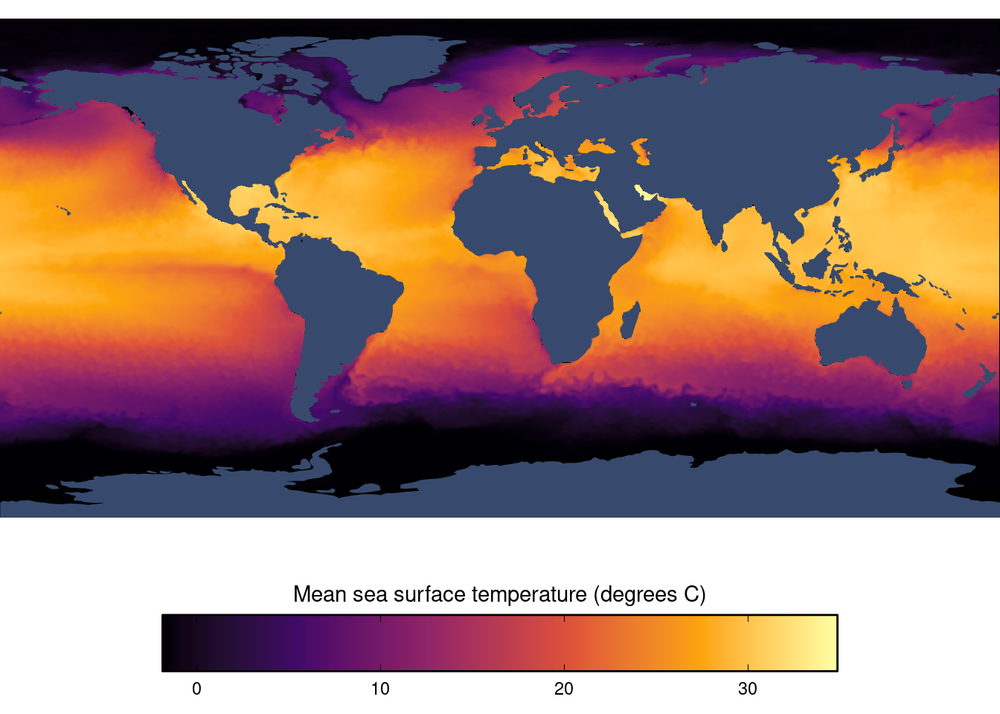
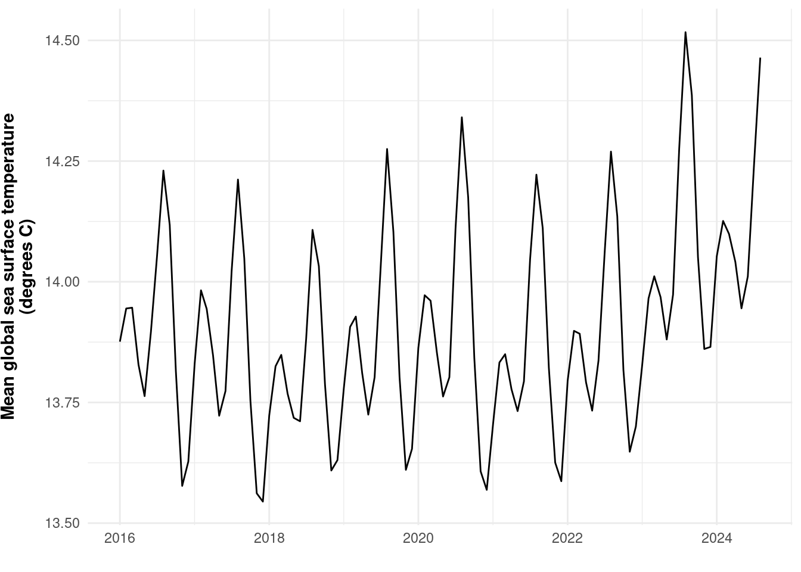
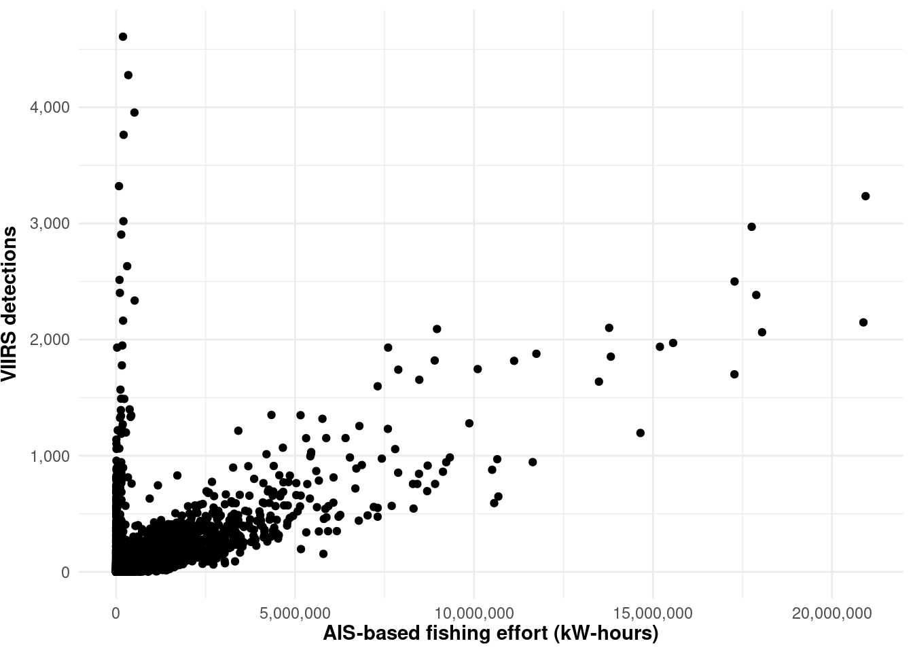

1 Methods
1.1 Data sources
1.1.1 AIS-based Fishing effort
We use satellite-based individual vessel monitoring AIS data processed by Global Fishing Watch (Kroodsma et al. (2018)). We use the V3 pipeline table pipe_ais_v3_published.messages. Variables of interest within this table include the following (descriptions are taken directly from the schema for pipe_ais_v3_published.messages):
ssvid: source specific vessel id; MMSI for AIShours: time since the previous position in the segmenttimestamp: timestamp for positionlon: longitudelat: latitudenight_loitering: 1 if the seg_id of every message of a squid_jigger that is at night and not moving, 0 if not.
In order to minimize noisy data, we only include AIS messages that have a clean_segs boolean (i.e., all messages must have good_seg boolean and must not have an overlapping_and_short boolean). We filter to just those messages where night_loitering = 1. For squid jigging vessels, GFW uses the heuristic of night loitering to identify when they are fishing. Therefore, any hours where night_loitering = 1 can be classified as fishing_hours
We take the raw high-resolution AIS data and aggregate fishing_hours spatially (by 0.5x0.5 degree pixels, which are roughly 55.5km x 55.5km at the equator), temporally by month, and by flag. We currently process data from 2016-01-01 through 2024-08-31.
1.1.2 Vessel info
Vessel characteristics data processed are by Global Fishing Watch (Park et al. (2023)). We use the V3 pipeline table pipe_ais_v3_published.vi_ssvid_v20240601. Variables of interest within this table include the following (descriptions are taken directly from the schema for pipe_ais_v3_published.vi_ssvid_v20240301):
ssvid: source specific vessel id; MMSI for AISbest.flag: best flag state (ISO3) for the vessel
best.best_vessel_class: best vessel class for the vessel (using official registry information where available, or the GFW vessel characteristics algorithm where not available)best.best_engine_power_kw: best engine power (kilowatts) for the vessel (using official registry information where available, or the GFW characteristics algorithm where not available)activity.active_hours: hours the vessel was broadcasting AIS and moving more than 0.1 knotsactivity.offsetting: true if this vessel has been seen with an offset postition at some point between 2012 and 2019activity.overlap_hours_multinames: the total numbers of hours of overlap between two segments where, over the time period of the two segments that overlap (including the non-overlapping time of the segments), the vessel broadcast two or more normalized name, where each normalized name was bradcast at least 10 or more times. That is a bit complicated, but the goal is to identify overlapping segments where there were likely more than one identity. (this should be 0; if it is > 0, it can be used as a filter to remove potentially erroneous/noisy vessels)
We filter to just those vessels where best.best_vessel_class = squid_jigger. Additionally, to reduce noise, we filter out vessels that broadcast exceedingly infrequently (i.e., activitiy.active_hours < 24) or are noisy/spoofing/offsetting vessels (i.e., NOT activity.offsetting OR activity.overlap_hours_multinames > 0.) They are simply not reliable and will not provide good effort estimates. This leaves us with 1,561 squid vessels for our analysis.
1.1.3 Sea surface temperature (SST)
Sea surface temperature (SST) data come from NOAA’s Optimum Interpolation Sea Surface Temperature (OISST) version 2.1 (Huang et al. (2021)), which were downloaded from their Coast Watch ERDDAP server. The raw data are provided globally at 0.25x0.25 degree daily resolution. We aggregate the data to 0.5x0.5 degree monthly resolution by calculating the mean, standard deviation, minimum, and maximum SST for each 0.5x0.5 degree pixel and month.
We can look at a map of SST, using August 2024 as an example (Figure 1.1).
Aggregating across the mean sea surface temperatures of each pixel, we can calculate the mean global sea surface temperature over time (Figure 1.2). This allows us to see both seasonal trends, and what appears to be a generally increasing trend over time.

1.1.4 Night light detections using VIIRS (Visible Infrared Imaging Radiometer Suite)
We use the NOAA VIIRS (Visible Infrared Imaging Radiometer Suite) data product to detect night light emissions from vessels. When the appropriate radiance threshold is applied, these can generally be assumed to represent light-luring squid vessels. Since use only the single most accurate VIIRS detection measurements each day, these can also be thought of as representing a fishing effort metric of vessel-days. We use the VIIRS data as an alternative fishing effort metric to AIS-based fishing effort since AIS is not used on all vessels, and since it can also be disabled on the vessels that do use it.
We leverage the VIIRS boat detection dataset developed by Elvidge et al. (2015). We then apply similar processing as Seto et al. (2023), which includes the following steps:
- Reduce false detections near South America caused by the the South Atlantic Anomaly (an abundance of high-energy particles in the atmosphere).
- Use a same radiance threshold of 10 nW cm−2 sr−1 used by Seto et al. (2023) (and established by Park et al. (2020)) in order to filter detections to those likely engaged in in pelagic light-luring activity.
- To eliminate double-counting when there may be multiple satellite overpasses on a single night, only count detections from the overpass with the smallest satellite zenith angle (smaller zenith angles are more accurate)
We then finally aggregate the total detections for each 0.5x0.5 degree pixel and month.
We can compare AIS-based fishing effort with VIIRS detections by aggregating AIS effort across flags for each month and pixel, and then matching this with VIIRS detections by month and pixel. There appears to be a generally strong relationship between the two, although there are many outliers that appear to have very low AIS-based fishing effort but actually have a very high number of VIIRS detections.

1.1.5 Joined dataset
The final dataset we use for our analysis is a combination of the gridded AIS-based fishing effort data, the gridded SST data, and the gridded VIIRS detections. We inner join the AIS-based effort and SST datasets by 0.5x0.5 degree pixel and month, since both datasets cover the entire time series. We then left join the VIIRS detection dataset by pixel and month, since this dataset only covers January 2017 through December 2021. Note that the joined dataset does not contain flag-pixel-months with zero AIS-based fishing effort (i.e., the data are conditional on there being some effort for any given flag-pixel-month). If desired, once we have a spatial scope with which to restrict the analysis, we could construct a dataset for that bounding box that includes zero fishing effort flag-pixel-month rows.
The joined dataset can be loaded in R using the command targets::tar_load(joined_dataset). The dataset has the following colums:
- month: Month (first day of month) (date)
- lon_bin: 0.5 degree longitude bin (degrees) (numeric)
- lat_bin: 0.5 degree latitude bin (degrees) (numeric) * flag: Fishing flag (character)
- mean_sst: Mean sea surface temperature, aggregated from the raw daily 0.25x0.25 degree data (degrees C) (numeric)
- sd_sst: Standard deviation of sea surface temperature, aggregated from the raw daily 0.25x0.25 degree data (degrees C) (numeric)
- min_sst: Minimum sea surface temperature (degrees C), aggregated from the raw daily 0.25x0.25 degree data (numeric)
- max_sst: Maximum sea surface temperature (degrees C), aggregated from the raw daily 0.25x0.25 degree data (numeric)
- fishing_hours: Total fishing effort across vessels (hours) (numeric)
- fishing_kw_hours: Total fishing effort across vessels (kW-hours) (numeric)
- viirs_detections: Night light detections from the VIIRS dataset (numeric)
Here we summarize these data (Table 1.1):
Table 1.1: Summary statistics for joined dataset that includes, gridded SST, AIS-based fishing effort, and VIIRS detections
| Name | joined_dataset |
| Number of rows | 1610486 |
| Number of columns | 11 |
| _______________________ | |
| Column type frequency: | |
| character | 1 |
| Date | 1 |
| numeric | 9 |
| ________________________ | |
| Group variables | None |
Variable type: character
| skim_variable | n_missing | complete_rate | min | max | empty | n_unique | whitespace |
|---|---|---|---|---|---|---|---|
| flag | 179745 | 0.89 | 3 | 3 | 0 | 45 | 0 |
Variable type: Date
| skim_variable | n_missing | complete_rate | min | max | median | n_unique |
|---|---|---|---|---|---|---|
| month | 0 | 1 | 2016-01-01 | 2024-08-01 | 2021-02-01 | 104 |
Variable type: numeric
| skim_variable | n_missing | complete_rate | mean | sd | p0 | p25 | p50 | p75 | p100 | hist |
|---|---|---|---|---|---|---|---|---|---|---|
| mean_sst | 0 | 1.00 | 20.04 | 6.81 | -1.65 | 14.31 | 20.41 | 26.08 | 35.46 | ▁▅▇▇▃ |
| sd_sst | 302 | 1.00 | 0.17 | 0.19 | 0.00 | 0.05 | 0.11 | 0.22 | 2.45 | ▇▁▁▁▁ |
| min_sst | 0 | 1.00 | 19.85 | 6.90 | -1.68 | 13.95 | 20.24 | 25.98 | 35.45 | ▁▅▇▇▃ |
| max_sst | 0 | 1.00 | 20.23 | 6.73 | -1.63 | 14.66 | 20.59 | 26.17 | 35.51 | ▁▅▇▇▃ |
| lon_bin | 0 | 1.00 | 16.89 | 110.83 | -180.00 | -82.00 | -0.50 | 132.50 | 179.50 | ▂▇▁▃▇ |
| lat_bin | 0 | 1.00 | 4.22 | 30.56 | -54.50 | -16.50 | 0.50 | 36.00 | 80.50 | ▅▇▅▇▁ |
| fishing_hours | 0 | 1.00 | 134.28 | 456.21 | 0.00 | 8.03 | 20.90 | 77.28 | 21005.80 | ▇▁▁▁▁ |
| fishing_kw_hours | 0 | 1.00 | 164088.16 | 636584.24 | 4.73 | 8351.48 | 23717.34 | 90379.80 | 31939325.02 | ▇▁▁▁▁ |
| viirs_detections | 944058 | 0.41 | 79.22 | 209.98 | 1.00 | 4.00 | 18.00 | 69.00 | 4608.00 | ▇▁▁▁▁ |